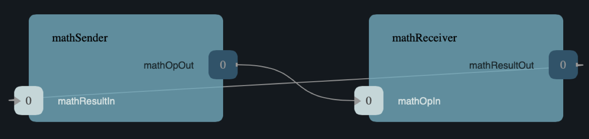

MathComponent Tutorial
Welcome to the MathComponent tutorial! This tutorial shows how to develop, test, and deploy a simple topology consisting of two components:
-
MathSender: A component that receives commands and forwards work toMathReceiver. -
MathReceiver: A component that carries out arithmetic operations and returns the results toMathSender.
See the diagram below.

What is covered
This tutorial will cover the following concepts:
-
Defining types, ports, and components in F'.
-
Creating a deployment and running the F' GDS (Ground Data System).
-
Writing unit tests.
-
Handling errors, creating events, and adding telemetry channels.
Tip
The source for this tutorial is located here: https://github.com/fprime-community/fprime-tutorial-math-component. If you are stuck at some point during the tutorial, you may refer to that reference as the "solution".
Project Setup
Bootstrapping F´
Note
If you have followed the HelloWorld tutorial previously, this should feel very familiar...
An F´ project ties to a specific version of tools to work with F´. In order to create this project and install the correct version of tools, you should perform a bootstrap of F´:
- Ensure you meet the F´ System Requirements
- Bootstrap your F´ project using repository name
math-projectand the top-level namespaceMathProject
Bootstrapping your F´ project created a repository containing the standard F´ project structure as well as the virtual environment up containing the tools to work with F´. The top-level namespace folder is MathProject.
Building the New F´ Project
The next step is to set up and build the newly created project. This will serve as a build environment for any newly created components, and will build the F´ framework supplied components.
Note
fprime-util generate sets up the build environment for a project/deployment. It only needs to be done once. At the end of this tutorial, a new deployment will be created and fprime-util generate will also be used then.
Summary
A new project has been created, and a new folder called in MathProject is in the project directory. The project directory includes the initial build system setup, and F´ version. It is still empty in that the user will still need to create components and deployments.
For the remainder of this Getting Started tutorial we should use the tools installed for our project and issue commands within this new project's folder. Change into the project directory and load the newly install tools with:
Defining Types
Background
In F Prime, a type definition defines a kind of data that you can pass between components or use in commands and telemetry.
For this tutorial, you need one type definition. The type will define an enumeration called MathOp, which represents a mathematical operation.
In this section
In this section, you will create a Types directory and add it to the project build. You will create an enumeration to represent several mathematical operations.
Setup
To start, create a directory where your type(s) will live:
The user defines types in an fpp (F prime prime) file. Use the command below to create an empty fpp file to define the MathOp type:
Implementing the Types
Use your favorite text editor, visual studios, nano, vim, etc..., and add the following to MathTypes.fpp.
# In: MathTypes.fpp
module MathProject {
@ Math operations
enum MathOp {
ADD @< Addition
SUB @< Subtraction
MUL @< Multiplication
DIV @< Division
}
}
Important
Think of modules similar to a cpp namespace. Whenever you want to make use of the enumeration, MathOp, you will need to use the MathProject module.
Above you have created an enumeration of the four math types that are used in this tutorial.
Adding to the Build
To specify how MathTypes.fpp should build with the project, you need to make two modifications to the MathProject:
- Create and edit
CMakeLists.txtinTypesto includeMathTypes.fppinto the build.
To create CMakeLists.txt use:
Important
Capitalization and spelling is important when creating files!
Use a text editor to replace whatever is in CMakeLists.txt, most likely nothing, with the following.
- Add the
Typesdirectory to the overall project build by adding toCMakeLists.txt.
Edit CMakeLists.txt, located in the MathProject directory, and add the following line at the end of the file:
The Types directory should now build without any issues. Test the build with the following command before moving forward.
Note
If you have not generated a build cache already, you may need to run fprime-util generate before you can build.
The output should indicate that the model built without any errors. If not, try to identify and correct what is wrong, either by deciphering the error output, or by going over the steps again. If you get stuck, you can look at the reference implementation.
Note
Advanced users may want to go inspect the generated code. Go to the directory MathProject/build-fprime-automatic-native/Types. The directory build-fprime-automatic-native is where all the generated code lives for the "automatic native" build of the project. Within that directory is a directory tree that mirrors the project structure. In particular, build-fprime-automatic-native/Types contains the generated code for Types.
Note
The files MathOpEnumAc.hpp and MathOpEnumAc.cpp are the auto-generated C++ files corresponding to the MathOp enum. You may wish to study the file MathOpEnumAc.hpp. This file gives the interface to the C++ class MathProject::MathOp. All enum types have a similar auto-generated class interface.
Summary
At this point you have successfully created the MathOp type
and added it to the project build. You can add more types here
later if you feel so inclined.
Constructing Ports
Background
A port is the endpoint of a connection between two components. A port definition is like a function signature; it defines the type of the data carried on a port.
Requirements
For this tutorial, you will need two port definitions:
-
OpRequestfor sending an arithmetic operation request fromMathSendertoMathReceiver. -
MathResultfor sending the result of an arithmetic operation fromMathReceivertoMathSender.
In this section
In this section, you will create a Ports directory where you will create two ports in MathPorts.fpp.
Setup
Start by making a directory where the ports will be defined. Create a directory called Ports in the MathProject directory:
While in "Ports", create an empty fpp file called MathPorts.fpp, this is where the ports will be defined:
Implementing the Ports
Use your favorite text editor to add the following to MathPorts.fpp:
# In: MathPorts.fpp
module MathProject {
@ Port for requesting an operation on two numbers
port OpRequest(
val1: F32 @< The first operand
op: MathOp @< The operation
val2: F32 @< The second operand
)
@ Port for returning the result of a math operation
port MathResult(
result: F32 @< the result of the operation
)
}
Note
Notice how we define ports in MathProject, which is where we defined MathOp as well.
Here, you have created two ports. The first port, called OpRequest, carries two 32-bit floats (val1 and val2) and a math operations op. The second port only carries one 32-bit float (result). The first port is intended to send an operation and operands to the MathReceiver.
The second port is designed to send the results of the operation back to MathSender.
For more information about port definitions, see The FPP User's Guide.
Adding to the Build
Create a CMakeLists.txt file in Ports.
Add the following to the CMakeLists.txt.
# In: Ports/CMakeLists.txt
set(SOURCE_FILES
"${CMAKE_CURRENT_LIST_DIR}/MathPorts.fpp"
)
register_fprime_module()
Add the following to CMakeLists.txt. Remember that CMakeLists.txt is in MathProject, not Ports.
Ports should build without any issues. Use the following to build:
Check in MathProject/build-fprime-automatic-native/Ports for port definitions. The names of the auto-generated C++
files end in *PortAc.hpp and *PortAc.cpp.
Note however, the auto-generated C++ port files are used by the autocoded component implementations; you won't ever program directly against their interfaces.
At this point, you have successfully implemented all the ports used for this tutorial and added them to the build.
Creating Components Part 1: Creating the MathSender
Background
Components are the lifeblood of an F' deployment. In this tutorial the components are strictly virtual, however in many deployments components will represent unique pieces of hardware, such as sensors and microcontrollers!
In this section
In this section, you will begin creating an active component and write its F Prime Prime (fpp) implementation. You will generate cpp and hpp files using the fpp. Note, that you will implement component behavior in MathSender.cpp in the next section. Most commonly, the steps to create a new component are the following:
- Construct the FPP model.
- Add the model to the project.
- Build the stub implementation.
- Complete the implementation.
- Write and run unit tests.
Component Description
The MathSender is an active component which receives parameters, sends parameters, logs events, and sends telemetry.
With the component description in mind, use the following command to create the MathSender component:
Creating the MathSender
F´ projects conveniently come with a Components/ folder to create components in. It is not required for components to live there, but this tutorial will make use of it.
[INFO] Cookiecutter source: using builtin
Component name [MyComponent]: MathSender
Component short description [Example Component for F Prime FSW framework.]: Active component used for sending operations and operands to the MathReceiver.
Component namespace [Component]: MathProject
Select component kind:
1 - active
2 - passive
3 - queued
Choose from 1, 2, 3 [1]: 1
Enable Commands?:
1 - yes
2 - no
Choose from 1, 2 [1]: 1
Enable Telemetry?:
1 - yes
2 - no
Choose from 1, 2 [1]: 1
Enable Events?:
1 - yes
2 - no
Choose from 1, 2 [1]: 1
Enable Parameters?:
1 - yes
2 - no
Choose from 1, 2 [1]: 1
[INFO] Found CMake file at 'MathProject/CMakeLists.txt'
Add component Components/MathSender to MathProject/CMakeLists.txt at end of file (yes/no)? yes
Generate implementation files (yes/no)? yes
Before doing anything to the files you have just generated, try building:
Editing the FPP Model
Now that you have created the component, you can start working on implementing the component behavior. The first part of implementing component behavior is editing the fpp file. The fpp file will specify what goes into the auto-generated cpp and hpp files. Writing the fpp file will not implement component behavior on its own, but it will generate templates for most of what you will write in cpp and hpp files.
In Components/MathSender, open MathSender.fpp and entirely replace its contents with the following:
# In: MathSender.fpp
module MathProject {
@ Component for sending a math operation
active component MathSender {
# ----------------------------------------------------------------------
# General ports
# ----------------------------------------------------------------------
@ Port for sending the operation request
output port mathOpOut: OpRequest
@ Port for receiving the result
async input port mathResultIn: MathResult
# ----------------------------------------------------------------------
# Special ports
# ----------------------------------------------------------------------
@ Command receive port
command recv port cmdIn
@ Command registration port
command reg port cmdRegOut
@ Command response port
command resp port cmdResponseOut
@ Event port
event port eventOut
@ Telemetry port
telemetry port tlmOut
@ Text event port
text event port textEventOut
@ Time get port
time get port timeGetOut
# ----------------------------------------------------------------------
# Commands
# ----------------------------------------------------------------------
@ Do a math operation
async command DO_MATH(
val1: F32 @< The first operand
op: MathOp @< The operation
val2: F32 @< The second operand
)
# ----------------------------------------------------------------------
# Events
# ----------------------------------------------------------------------
@ Math command received
event COMMAND_RECV(
val1: F32 @< The first operand
op: MathOp @< The operation
val2: F32 @< The second operand
) \
severity activity low \
format "Math command received: {f} {} {f}"
@ Received math result
event RESULT(
result: F32 @< The math result
) \
severity activity high \
format "Math result is {f}"
# ----------------------------------------------------------------------
# Telemetry
# ----------------------------------------------------------------------
@ The first value
telemetry VAL1: F32
@ The operation
telemetry OP: MathOp
@ The second value
telemetry VAL2: F32
@ The result
telemetry RESULT: F32
}
}
About this Component
The above code defines MathSender component. The component is active, which means it has its own thread.
Inside the definition of the MathSender component are several specifiers. We have divided the specifiers into five groups.
-
General ports: These are user-defined ports for application-specific functions. There are two general ports: an output port
mathOpOutof typeOpRequestand an input portmathResultInof typeMathResult. Notice that these port specifiers use the ports that you defined. The input port is asynchronous. This means that invoking the port (i.e., sending data on the port) puts a message on a queue. The handler runs later, on the thread of this component. -
Special ports: These are ports that have a special meaning in F Prime. The special ports are ports for registering commands with the dispatcher, receiving commands, sending command responses, emitting event reports, emitting telemetry, and getting the time.
-
Commands: These are commands sent from the ground or from a sequencer and dispatched to this component. There is one command
DO_MATHfor doing a math operation. The command is asynchronous. This means that when the command arrives, it goes on a queue and its handler is later run on the thread of this component -
Events: These are event reports that this component can emit. There are two event reports, one for receiving a command and one for receiving a result.
-
Telemetry: These are channels that define telemetry points that the this component can emit. There are four telemetry channels: three for the arguments to the last command received and one for the last result received.
Note
For more information on defining components, see the FPP User's Guide.
Generate the Implementation Files
Now you have written the FPP code for the component, but the cpp and hpp files do not yet reflect the changes you have made to the fpp file. To get the cpp and hpp to reflect the specs you have defined in the fpp, you need to use the implement command as shown below:
Now, In MathSender, you will see two new files, MathSender.template.cpp and MathSender.template.hpp. The template files are the files you just generated using the FPP model. Whenever F' generates code, it creates new file with the .template. so as to not burn down any old code. In this case, you did not write anything in the original MathSender.cpp or MathSender.hpp, so you can use a move command to replace the old code with the new code:
# In: MathSender
mv MathSender.template.cpp MathSender.cpp
mv MathSender.template.hpp MathSender.hpp
Build MathSender to make sure everything worked as expected.
Wait... Shouldn't You Add this to the Build?
If you've been paying attention to the tutorial thus far, you might be getting some warning bells that you have not added your new component to the build. Fear not, when using fprime-util new --component all of the CMakeLists.txt work was done for you! Take a look at both files to verify for yourself.
Summary
You are about two thirds of the way through finishing MathSender. In the next section you will implement MathSender's component behavior.
Creating Components Part 2: Implementing MathSender Behavior
In this section
In this section you will edit MathSender.cpp to implement the desired component behavior.
As a reminder, below is the component behavior you are trying to implement in this section of the tutorial.
Component Description
The MathSender is going to be an active component which will receive parameters, send parameters, log events, and send telemetry.
Editing the Do Math Command Handler
The handler DO_MATH_handler is called when the MathSender component receives a DO_MATH command. This handler overrides the corresponding pure virtual function in the auto-generated base class. Fill in the handler so that it looks like this:
// In: MathSender.cpp
void MathSender ::
DO_MATH_cmdHandler(
const FwOpcodeType opCode,
const U32 cmdSeq,
F32 val1,
MathOp op,
F32 val2
)
{
this->tlmWrite_VAL1(val1);
this->tlmWrite_OP(op);
this->tlmWrite_VAL2(val2);
this->log_ACTIVITY_LO_COMMAND_RECV(val1, op, val2);
this->mathOpOut_out(0, val1, op, val2);
this->cmdResponse_out(opCode, cmdSeq, Fw::CmdResponse::OK);
}
Explanation
The first two arguments to the handler function provide the command opcode and the command sequence number (a unique identifier generated by the command dispatcher). The remaining arguments are supplied when the command is sent, for example, from the F Prime ground data system (GDS). The implementation code does the following:
-
Emit telemetry and events.
-
Invoke the
mathOpOutport to request thatMathReceiverperform the operation. -
Send a command response indicating success. The command response goes out on the special port
cmdResponseOut.
In F Prime, every execution of a command handler must end by sending a command response. The proper behavior of other framework components (e.g., command dispatcher, command sequencer) depends upon adherence to this rule.
Check the build using:
Editing the Result Handler
The handler mathResultIn_handler is called when the MathReceiver component code returns a result by invoking the mathResultIn port. Again the handler overrides the corresponding pure virtual function in the auto-generated base class. Fill in the handler so that it looks like this:
// In: MathSender.cpp
void MathSender ::
mathResultIn_handler(
const FwIndexType portNum,
F32 result
)
{
this->tlmWrite_RESULT(result);
this->log_ACTIVITY_HI_RESULT(result);
}
Explanation
The implementation code emits the result on the RESULT telemetry channel and as a RESULT event report.
Check the build using:
Summary
Congratulations, you have completed MathSender! Well... there's always more to be done, such as error handling, adding more telemetry,
creating more events, and generally messing around with what MathSender can do. But for the purposes of getting a deployment
working, this component is done!
Creating Components Part 3: Starting the MathReceiver
In this Section
In this section you will begin creating MathReceiver following the same steps as the last section. Note, that the MathReceiver is a little different than the MathSender.
Component Description
The MathReceiver is a queued component which receives parameters, send parameters, logs events, and sends telemetry. With this is mind, use the following command to create the MathReceiver component.
Creating the MathReceiver
This command will prompt you for some inputs. You should specify the follow so that the components matches the short description above. Don't forget that this is a QUEUED component:[INFO] Cookiecutter source: using builtin
Component name [MyComponent]: MathReceiver
Component short description [Example Component for F Prime FSW framework.]: Your description
Component namespace [Component]: MathProject
Select component kind:
1 - active
2 - passive
3 - queued
Choose from 1, 2, 3 [1]: 3
Enable Commands?:
1 - yes
2 - no
Choose from 1, 2 [1]: 1
Enable Telemetry?:
1 - yes
2 - no
Choose from 1, 2 [1]: 1
Enable Events?:
1 - yes
2 - no
Choose from 1, 2 [1]: 1
Enable Parameters?:
1 - yes
2 - no
Choose from 1, 2 [1]: 1
[INFO] Found CMake file at 'MathProject/CMakeLists.txt'
Add component Components/MathSender to MathProject/CMakeLists.txt at end of file (yes/no)? yes
Generate implementation files (yes/no)? yes
Before doing anything to the files you have just generated, try building:
Editing the F Prime Prime Model
Now that you have created the component, you can implement the component behavior in the fpp model. Use a text editor to entirely replace the existing MathReceiver.fpp with the following:
# In: MathReceiver.fpp
module MathProject {
@ Component for receiving and performing a math operation
queued component MathReceiver {
# ----------------------------------------------------------------------
# General ports
# ----------------------------------------------------------------------
@ Port for receiving the math operation
async input port mathOpIn: OpRequest
@ Port for returning the math result
output port mathResultOut: MathResult
@ The rate group scheduler input
sync input port schedIn: Svc.Sched
# ----------------------------------------------------------------------
# Special ports
# ----------------------------------------------------------------------
@ Command receive
command recv port cmdIn
@ Command registration
command reg port cmdRegOut
@ Command response
command resp port cmdResponseOut
@ Event
event port eventOut
@ Parameter get
param get port prmGetOut
@ Parameter set
param set port prmSetOut
@ Telemetry
telemetry port tlmOut
@ Text event
text event port textEventOut
@ Time get
time get port timeGetOut
# ----------------------------------------------------------------------
# Parameters
# ----------------------------------------------------------------------
@ The multiplier in the math operation
param FACTOR: F32 default 1.0 id 0 \
set opcode 10 \
save opcode 11
# ----------------------------------------------------------------------
# Events
# ----------------------------------------------------------------------
@ Factor updated
event FACTOR_UPDATED(
val: F32 @< The factor value
) \
severity activity high \
id 0 \
format "Factor updated to {f}" \
throttle 3
@ Math operation performed
event OPERATION_PERFORMED(
val: MathOp @< The operation
) \
severity activity high \
id 1 \
format "{} operation performed"
@ Event throttle cleared
event THROTTLE_CLEARED \
severity activity high \
id 2 \
format "Event throttle cleared"
# ----------------------------------------------------------------------
# Commands
# ----------------------------------------------------------------------
@ Clear the event throttle
async command CLEAR_EVENT_THROTTLE \
opcode 0
# ----------------------------------------------------------------------
# Telemetry
# ----------------------------------------------------------------------
@ The operation
telemetry OPERATION: MathOp id 0
@ Multiplication factor
telemetry FACTOR: F32 id 1
}
}
Explanation
This code defines a component MathReceiver.
The component is queued, which means it has a queue but no thread.
Work occurs when the thread of another component invokes the schedIn port of this component.
We have divided the specifiers of this component into six groups:
- General ports: There are three ports:
- an input port
mathOpInfor receiving a math operation,mathOpInis asynchronous. That means invocations ofmathOpInput messages on a queue. - an output port
mathResultOutfor sending a math result, and -
an input port
schedInfor receiving invocations from the scheduler.schedInis synchronous. That means invocations ofschedInimmediately call the handler function to do work. -
Special ports: As before, there are special ports for commands, events, telemetry, and time. There are also special ports for getting and setting parameters. We will explain the function of these ports below.
-
Parameters: There is one parameter. A parameter is a constant that is configurable by command. In this case there is one parameter
FACTOR. It has the default value 1.0 until its value is changed by command. When doing math, theMathReceivercomponent performs the requested operation and then multiplies by this factor. For example, if the arguments of themathOpInport are v1,ADD, and v2, and the factor is f, then the result sent onmathResultOutis (v1 + v2) f. -
Events: There are three event reports:
-
FACTOR_UPDATED: Emitted when theFACTORparameter is updated by command. This event is throttled to a limit of three. That means that after the event is emitted three times it will not be emitted any more, until the throttling is cleared by command (see below). -
OPERATION_PERFORMED: Emitted when this component performs a math operation. -
THROTTLE_CLEARED: Emitted when the event throttling is cleared. -
Commands: There is one command for clearing the event throttle.
-
Telemetry: There two telemetry channels: one for reporting the last operation received and one for reporting the factor parameter.
For the parameters, events, commands, and telemetry, we chose to put in all the opcodes and identifiers explicitly.
These can also be left implicit, as in the MathSender component example.
For more information, see the FPP User's Guide.
Generate the Implementation Files
Generate cpp and hpp files based off your MathReceiver by using:
Replace the original cpp and hpp files with the ones you just created:
# In: MathReceiver
mv MathReceiver.template.cpp MathReceiver.cpp
mv MathReceiver.template.hpp MathReceiver.hpp
Test the build:
Summary
You are two thirds of the way through finishing MathReceiver.
So far, you have created a queued component stub, filled in the fpp
file, and wrote component characteristics in MathReceiver.fpp. Next,
you will write the behavior for MathReceiver.
Creating Components Part 4: Implementing MathReceiver Behavior
In this Section
In this section you will complete the implementation of the MathReciever by filling in MathReceiver.cpp and MathReceiver.hpp.
Editing the Math Op In Handler
Fill in the mathOpIn handler: In MathReceiver.cpp, complete the implementation of MathReceiver::mathOpIn_handler() so that it looks like this:
// In: MathReceiver.cpp
void MathReceiver ::
mathOpIn_handler(
const FwIndexType portNum,
F32 val1,
const MathOp& op,
F32 val2
)
{
// Get the initial result
F32 res = 0.0;
switch (op.e) {
case MathOp::ADD:
res = val1 + val2;
break;
case MathOp::SUB:
res = val1 - val2;
break;
case MathOp::MUL:
res = val1 * val2;
break;
case MathOp::DIV:
res = val1 / val2;
break;
default:
FW_ASSERT(0, op.e);
break;
}//end switch
// Get the factor value
Fw::ParamValid valid;
F32 factor = paramGet_FACTOR(valid);
FW_ASSERT(
valid.e == Fw::ParamValid::VALID || valid.e == Fw::ParamValid::DEFAULT,
valid.e
);
// Multiply result by factor
res *= factor;
// Emit telemetry and events
this->log_ACTIVITY_HI_OPERATION_PERFORMED(op);
this->tlmWrite_OPERATION(op);
// Emit result
this->mathResultOut_out(0, res);
}//end mathOpIn_handler
Explanation
MathOpIn_Handler does the following:
-
Compute an initial result based on the input values and the requested operation.
-
Get the value of the factor parameter. Check that the value is a valid value from the parameter database or a default parameter value.
-
Multiply the initial result by the factor to generate the final result.
-
Emit telemetry and events.
-
Emit the result.
Note that in step 1, op is an enum (a C++ class type), and op.e is the corresponding numeric value (an integer type). Note also that in the default case we deliberately fail an assertion. This is a standard pattern for exhaustive case checking. We should never hit the assertion. If we do, then a bug has occurred: we missed a case.
Editing the Schedule Handler
Fill in the schedIn handler in MathReceiver.cpp, complete the implementation of schedIn_handler so that it looks like this:
// In: MathReceiver.cpp
void MathReceiver ::
schedIn_handler(
const FwIndexType portNum,
U32 context
)
{
FwSizeType numMsgs = this->m_queue.getMessagesAvailable();
for (FwSizeType i = 0; i < numMsgs; ++i) {
(void) this->doDispatch();
}
}
Explanation
This code dispatches all the messages on the queue. Note that for a queued component, we have to do this dispatch explicitly in the schedIn handler. For an active component, the framework auto-generates the dispatch code.
Editing the Throttle Command Handler
Fill in the CLEAR_EVENT_THROTTLE command handler: In MathReceiver.cpp, complete the implementation of CLEAR_EVENT_THROTTLE_cmdHandler so that it looks like this:
// In: MathReceiver.cpp
void MathReceiver ::
CLEAR_EVENT_THROTTLE_cmdHandler(
const FwOpcodeType opCode,
const U32 cmdSeq
)
{
// clear throttle
this->log_ACTIVITY_HI_FACTOR_UPDATED_ThrottleClear();
// send event that throttle is cleared
this->log_ACTIVITY_HI_THROTTLE_CLEARED();
// reply with completion status
this->cmdResponse_out(opCode, cmdSeq, Fw::CmdResponse::OK);
}
Explanation
The call to log_ACTIVITY_HI_FACTOR_UPDATED_ThrottleClear clears the throttling of the FACTOR_UPDATED event. The next two lines send a notification event and send a command response.
Writing a Parameter Checker
Add the following function to MathReceiver.cpp. You will need to add the corresponding function header to MathReceiver.hpp. Note: this function is completely new, there is no preexisting stub for this function.
// In: MathReceiver.cpp
void MathReceiver ::
parameterUpdated(FwPrmIdType id)
{
switch (id) {
case PARAMID_FACTOR: {
Fw::ParamValid valid;
F32 val = this->paramGet_FACTOR(valid);
FW_ASSERT(
valid.e == Fw::ParamValid::VALID || valid.e == Fw::ParamValid::DEFAULT,
valid.e
);
this->log_ACTIVITY_HI_FACTOR_UPDATED(val);
break;
}
default:
FW_ASSERT(0, id);
break;
}
}
// In: MathReceiver.hpp
// As a Private under: Handler implementations for user-defined typed input ports
void parameterUpdated(FwPrmIdType id) override;
Explanation
This code implements an optional function that, if present, is called when a parameter is updated by command. The parameter identifier is passed in as the id argument of the function. Here the function does the following:
-
If the parameter identifier is PARAMID_FACTOR (the parameter identifier corresponding to the FACTOR parameter), then get the parameter value and emit an event report.
-
Otherwise fail an assertion. This code should never run, because there are no other parameters.
Test the build
Summary
Congratulations, you have finished MathReceiver!
Developing Deployments
Background
The deployment is the portion of F' that will actually run on the spacecraft. Think of the deployment like an executable.
In this Section
In this section, you will create a deployment and integrate the deployment with the other work you have completed. At the end of this section, you will run the F' ground data system and test your components by actually running them!
Create a Deployment
Use the following command to create the deployment:
This command will ask for some input. Respond with the following:
For any other questions, select the default response.
Test the build to make sure everything is okay:
Add Component Instances to the Deployment
Create an instance for MathSender in instances.fpp.
# In: MathDeployment/Top/instances.fpp
# Under: Active component instances
instance mathSender: MathProject.MathSender base id 0xE00 \
queue size Default.QUEUE_SIZE \
stack size Default.STACK_SIZE \
priority 100
# Under: Queued component instances
instance mathReceiver: MathProject.MathReceiver base id 0x2700 \
queue size Default.QUEUE_SIZE
Explanation
This code defines an instance mathSender of component MathSender. It has base identifier 0xE00. FPP adds the base identifier to each the relative identifier defined in the component to compute the corresponding identifier for the instance. For example, component MathSender has a telemetry channel MathOp with identifier 1, so instance mathSender has a command MathOp with identifier 0xE01
The mathReceiver was defined with base identifier 0x2700 and the default queue size.
Update the Topology
Add the instances you created to topology.fpp.
# In: MathDeployment/Top/topology.fpp
# Under: Instances used in the topology
instance mathSender
instance mathReceiver
Note
This step highlights the importance of capitalization. The easiest way to differentiate between the component definition and instance is the capitalization.
Explanation
These lines add the mathSender and mathReceiver instances to the topology.
Check the Build
Just to be safe, check the build after this step.
Check for Unconnected Ports
Check to make sure all of the ports have been connected:
At this point in time, several mathSender and mathReceiver ports (such as mathOpIn or schedIn) are still unconnected. Hence, they should appear on this list.
Go into topology.fpp, connect mathReceiver.schedIn to rate group one using the code below:
# In: Top/topology.fpp
# Under: connections RateGroups for rateGroup1
rateGroup1.RateGroupMemberOut[5] -> mathReceiver.schedIn
Note
[5] is the next available index in rateGroup1.RateGroupMemberOut, as shown in the topology.fpp.
Explanation
This line adds the connection that drives the schedIn port of the mathReceiver component instance.
Verify that you successfully took a port off the list of unconnected ports.
Add the connections between the mathSender and mathReceiver
# In: Top/topology.fpp
# Under: connections MathDeployment
mathSender.mathOpOut -> mathReceiver.mathOpIn
mathReceiver.mathResultOut -> mathSender.mathResultIn
Test and Run
Re-run the check for unconnected ports: Notice that no mathSender or mathReceiver ports are unconnected.
Now it is time to build the entire project and run it! Navigate back to MathDeployment and build:
Run the MathComponent deployment through the GDS:
Tip
If you encounter an error on this step, make sure you are running in the MathDeployment directory.
Send Some Commands
Under Commanding there is a drop-down menu called "mnemonic". Click Mnemonic and find mathSender.DO_MATH. When you select DO_MATH, three new option should appear. In put 7 into val1, put 6 into val2, and put MUL into op. Press send command. Navigate to Events (top left) and find the results of your command. You should see The Ultimate Answer to Life, the Universe, and Everything: 42.
For a more detailed guide to the F´ GDS, see GDS Introduction.
Optional: Visualizing the topology
The F Prime tool suite provides a visualizer webapp to look at topology connections in a graphical way. This is a great tool that you can use on any F Prime deployment to help gather further insights into how things are connected, and can help for development, review, and documentation purposes. Make sure you are in the Top/ directory of your deployment before you run the command.
Each connections {} block in the FPP definition is represented in a different graph. Open the RateGroups or MathDeployment diagram using the dropdown menu and confirm that you can see the connections you just created in the sections above.
Summary
In this section of the tutorial, you created a deployment. While at it, you filled out the projects instance and topology. These steps are what turn a bunch hard worked code into flight-software. Further more, you ran the software!
Congratulations
You have completed your F' deployment! If you wish to stop here, you may. You can also rest assured knowing that the work you have done is reusable. In other words, you've written code in the same way that you will write code for actual spacecrafts. Except... actual spacecrafts will make extensive use of unit tests and error handling. Keep going in this tutorial to learn more about unit testing, error handling, and just to practice using F'.
Writing Unit Tests Part 1: Creating the Implementation Stub
Background
Unit tests are an important part of FSW development. At the component level, unit tests typically invoke input ports, send commands, and check for expected values on output ports (including telemetry and event ports).
In this Section
In this section of the tutorial, you will create a stub implementation of a unit test that will test MathSender.
First, let's create our Unit Test build cache:
Generate the Unit Test Stub
Generate a stub implementation of the unit tests.
This stub contains all the boilerplate necessary to write and run unit tests against the MathSender component:
You have just created MathSender/test/ut folder with three new files MathSenderTester.template.cpp, MathSenderTester.template.hpp and MathSenderTestMain.template.cpp.
Since this is the start of the test implementation, we use the generated template files for our initial test implementation. Inside your MathSender/test/ut directory, rename the files removing the .template suffix:
# In MathSender/test/ut
mv MathSenderTester.template.hpp MathSenderTester.hpp
mv MathSenderTester.template.cpp MathSenderTester.cpp
mv MathSenderTestMain.template.cpp MathSenderTestMain.cpp
Add the Tests to the Build
Add the unit test sources to the build by uncommenting the following lines at the very end of the CMakeLists.txt file in your MathProject/Components/MathSender directory:
# In: MathSender/CMakeLists.txt
### Unit Tests ###
set(UT_SOURCE_FILES
"${CMAKE_CURRENT_LIST_DIR}/MathSender.fpp"
"${CMAKE_CURRENT_LIST_DIR}/test/ut/MathSenderTestMain.cpp"
"${CMAKE_CURRENT_LIST_DIR}/test/ut/MathSenderTester.cpp"
)
set(UT_MOD_DEPS
STest
)
set(UT_AUTO_HELPERS ON)
register_fprime_ut()
Build the unit test in MathSender:
Warning
Don't forget to add --ut or else you are just going to build the component again.
(Optional) Inspect the generated code
The unit test build generates some code to support unit testing. The code is located at MathSender/build-fprime-automatic-native-ut/Components/MathSender.
This directory contains two auto-generated classes:
-
MathSenderGTestBase: This is the direct base class ofTester. It provides a test interface implemented with Google Test macros. -
MathSenderTesterBase: This is the direct base class ofMathSenderGTestBase. It provides basic features such as histories of port invocations. It is not specific to Google Test, so you can use this class without Google Test if desired.
You can look at the header files for these generated classes to see what operations they provide. In the next sections we will provide some example uses of these operations.
Summary
In this section you created the stub implementation of a unit test. In the next section you will finish the unit test and run it.
Writing Unit Tests Part 2: Completing the Stub & Running the Test
In this Section
In this section of the tutorial, you will fill in the stub implementation you created in the last section and run the unit test.
Create a Helper Function
Write a generic helper function so you can reuse code while writing unit tests.
Start by writing a function signature in MathSenderTester.hpp in MathSender/test/ut:
Fill out the corresponding function body in MathSenderTester.cpp:
// In: MathSenderTester.cpp
void MathSenderTester ::
testDoMath(MathOp op)
{
// Pick values
const F32 val1 = 2.0;
const F32 val2 = 3.0;
// Send the command
// pick a command sequence number
const U32 cmdSeq = 10;
// send DO_MATH command
this->sendCmd_DO_MATH(0, cmdSeq, val1, op, val2);
// retrieve the message from the message queue and dispatch the command to the handler
this->component.doDispatch();
// Verify command receipt and response
// verify command response was sent
ASSERT_CMD_RESPONSE_SIZE(1);
// verify the command response was correct as expected
ASSERT_CMD_RESPONSE(0, MathSenderComponentBase::OPCODE_DO_MATH, cmdSeq, Fw::CmdResponse::OK);
// Verify operation request on mathOpOut
// verify that one output port was invoked overall
ASSERT_FROM_PORT_HISTORY_SIZE(1);
// verify that the math operation port was invoked once
ASSERT_from_mathOpOut_SIZE(1);
// verify the arguments of the operation port
ASSERT_from_mathOpOut(0, val1, op, val2);
// Verify telemetry
// verify that 3 channels were written
ASSERT_TLM_SIZE(3);
// verify that the desired telemetry values were sent once
ASSERT_TLM_VAL1_SIZE(1);
ASSERT_TLM_VAL2_SIZE(1);
ASSERT_TLM_OP_SIZE(1);
// verify that the correct telemetry values were sent
ASSERT_TLM_VAL1(0, val1);
ASSERT_TLM_VAL2(0, val2);
ASSERT_TLM_OP(0, op);
// Verify event reports
// verify that one event was sent
ASSERT_EVENTS_SIZE(1);
// verify the expected event was sent once
ASSERT_EVENTS_COMMAND_RECV_SIZE(1);
// verify the correct event arguments were sent
ASSERT_EVENTS_COMMAND_RECV(0, val1, op, val2);
}
Explanation
This function is parameterized over different operations.
It is divided into five sections: sending the command, checking the command response, checking the output on mathOpOut, checking telemetry, and checking events.
The comments explain what is happening in each section. For further information about the F Prime unit test interface, see the F Prime User's Guide.
Notice that after sending the command to the component, we call the function doDispatch on the component. We do this in order to simulate the behavior of the active component in a unit test environment.
In a flight configuration, the component has its own thread, and the thread blocks on the doDispatch call until another thread puts a message on the queue.
In a unit test context, there is only one thread, so the pattern is to place work on the queue and then call doDispatch on the same thread.
There are a couple of pitfalls to watch out for with this pattern:
-
If you put work on the queue and forget to call
doDispatch, the work won't get dispatched. Likely this will cause a unit test failure. -
If you call
doDispatchwithout putting work on the queue, the unit test will block until you kill the process (e.g., with control-C).
Write a Function to Test ADD
You will now create a function to test the ADD command. Add a function signature to MathSenderTester.hpp:
Write the corresponding tester function using the helper function you just wrote:
// In: MathSenderTester.cpp
void MathSenderTester ::
testAddCommand()
{
this->testDoMath(MathOp::ADD);
}
Write a Google test macro in MathSenderTestMain.cpp and make sure the test macro goes before main:
// In: MathSenderTestMain.cpp
TEST(Nominal, AddCommand) {
MathProject::MathSenderTester tester;
tester.testAddCommand();
}
Explanation
The TEST macro is an instruction to Google Test to run a test. Without this step, your tests will never run. Nominal is the name of a test suite. We put this test in the Nominal suite because it addresses nominal (expected) behavior. AddCommand is the name of the test.
Inside the body of the macro, the first line declares a new object tester of type MathSenderTester. We typically declare a new object for each unit test, so that each test starts in a fresh state. The second line invokes the function testAddCommand that we wrote in the previous section.
Run Your Tests
Run the test you have written. Make sure to execute the following in MathSender.
As an exercise, try the following:
-
Change the behavior of the component so that it does something incorrect. For example, try adding one to a telemetry value before emitting it.
-
Rerun the test and observe what happens.
Check Your Test Coverage
You can also check the coverage that your test covers. The following should also be executed in MathSender.
In addition to printing out your test coverage overview in the console, the --coverage flag will generate a coverage/ directory that has HTML files showing additional code coverage info. This all uses Gcov under the hood.
Add more command tests
Try to follow the pattern given in the previous section to add three more tests, one each for operations SUB, MUL, and DIV. Most of the work should be done in the helper that we already wrote. Each new test requires just a short test function and a short test macro.
Run the tests to make sure everything compiles and the tests pass.
Summary
In this section you filled out your unit test implementation stub and ran your unit test.
Writing Unit Tests Part 3: Testing the Results
In this Section
In this section of the tutorial, you will add another test into MathSender/test/ut and run the new test.
Add a result test:
Add a test for exercising the scenario in which the MathReceiver component sends a result back to MathSender.
Add the following function signature in the "Tests" section of MathSenderTester.hpp:
Add the corresponding function body in MathSenderTester.cpp:
// In: MathSenderTester.cpp
void MathSenderTester ::
testResult()
{
// Generate an expected result
const F32 result = 10.0;
// reset all telemetry and port history
this->clearHistory();
// call result port with result
this->invoke_to_mathResultIn(0, result);
// retrieve the message from the message queue and dispatch the command to the handler
this->component.doDispatch();
// verify one telemetry value was written
ASSERT_TLM_SIZE(1);
// verify the desired telemetry channel was sent once
ASSERT_TLM_RESULT_SIZE(1);
// verify the values of the telemetry channel
ASSERT_TLM_RESULT(0, result);
// verify one event was sent
ASSERT_EVENTS_SIZE(1);
// verify the expected event was sent once
ASSERT_EVENTS_RESULT_SIZE(1);
// verify the expect value of the event
ASSERT_EVENTS_RESULT(0, result);
}
mathResultIn port) instead of sending a command.
Add the Tests to MathSenderTestMain and Run
Add the following test macro to MathSenderTestMain.cpp:
// In: MathSenderTestMain.cpp
TEST(Nominal, Result) {
MathProject::MathSenderTester tester;
tester.testResult();
}
Run the tests:
Again you can try altering something in the component code to see what effect it has on the test output.
Summary
In this section, you created another helper function used to look test the received results as seen by the MathSender. You ran the test that you should wrote to ensure that it worked.
Writing Unit Tests Part 4: Random testing
Background
Testing using only numbers that you hard code into your tests can easily leave edge cases untouched can allow you, the programmer, to miss bugs.
F' provides a module called STest that provides helper classes and functions for writing unit tests. As an exercise, use the interface provided by STest/STest/Pick.hpp to pick random values to use in the tests instead of using hard-coded values such as 2.0, 3.0, and 10.
In this Section
In this section of the tutorial, you will create test that uses random numbers instead of hard coded numbers.
To incorporate random numbers into the existing tests you have written for MathSender, you only need to make a couple small modifications.
First, edit MathSender/test/ut/MathSenderTester.cpp by adding a Pick.hpp to the includes:
Second, edit MathSender/test/ut/MathSenderTester.cpp to pick random values:
// In: MathSenderTester.cpp
// Within: void MathSenderTester::testDoMath(MathOp op)
// Pick values
const F32 val1 = STest::Pick::any();
const F32 val2 = STest::Pick::any() + STest::Pick::inUnitInterval();
Third, modify MathSenderTestMain.cpp to include Random.hpp:
Fourth, add the following line to the main function of MathSenderTestMain.cpp, just before the return statement:
Fifth, modify MathSender/CMakeLists.txt to include STest as a build dependency:
Go to MathProject/build-fprime-automatic-native-ut/Components/MathSender and inspect the file seed-history. This file is a log of random seed values. Each line represents the seed used in the corresponding run.
Fixing the Random Seed:
Sometimes you may want to run a test with a particular seed value, e.g., for replay debugging. To do this, put the seed value into a file seed in the same directory as seed-history. If the file seed exists, then STest will use the seed it contains instead of generating a new seed.
Try the following:
-
Copy the last value S of
seed-historyintoseed. -
In Components/MathSender, re-run the unit tests a few times.
-
Inspect
MathProject/build-fprime-automatic-native-ut/Components/MathSender/seed-history. You should see that the value S was used in the runs you just did (corresponding to the last few entries in seed-history).
Summary
In this section you incorporated random testing into your existing tests.
Writing Unit Tests Part 5: Creating the Implementation Stub
In this Section
In this section of the tutorial, you will be repeating the steps you used to create an implementation stub for MathSender.
Generate a stub implementation of the unit tests.
Note
These commands may take a while to run.
You have just generated three new files MathReceiverTester.template.cpp, MathReceiverTester.template.hpp, and MathReceiverTestMain.template.cpp in the MathReceiver/test/ut/ directory. Remove the template suffix, so we can use them as our initial test implementation:
# In MathReceiver/test/ut
mv MathReceiverTester.template.hpp MathReceiverTester.hpp
mv MathReceiverTester.template.cpp MathReceiverTester.cpp
mv MathReceiverTestMain.template.cpp MathReceiverTestMain.cpp
Add the unit test to the build. Do so by uncommenting the appropriate lines in the CMakeLists.txt. The UT section should now look like the following:
# In: MathReceiver/CMakeLists.txt
### Unit Tests ###
set(UT_SOURCE_FILES
"${CMAKE_CURRENT_LIST_DIR}/MathReceiver.fpp"
"${CMAKE_CURRENT_LIST_DIR}/test/ut/MathReceiverTestMain.cpp"
"${CMAKE_CURRENT_LIST_DIR}/test/ut/MathReceiverTester.cpp"
)
set(UT_MOD_DEPS
STest
)
set(UT_AUTO_HELPERS ON)
register_fprime_ut()
Build the unit test in MathReceiver:
Warning
Don't forget to add --ut or else you are just going to build the component again.
Preparing for Random Testing
Complete the following steps to prepare for random testing.
// In: MathReceiverTestMain.cpp
#include "MathReceiverTester.hpp"
#include "STest/Random/Random.hpp"
Summary
In this section you have setup implementation stubs to begin writing unit tests for MathReceiver.
Writing Unit Tests Part 6: Writing Helper Functions
In this Section
In this section of the tutorial, you will write helper functions to tests various function of MathReceiver.
Add a ThrottleState enum class
Add the following code to the beginning of the
MathReceiverTester class in MathReceiverTester.hpp:
// In: MathReceiverTester.hpp
private:
// ----------------------------------------------------------------------
// Types
// ----------------------------------------------------------------------
enum class ThrottleState {
THROTTLED,
NOT_THROTTLED
};
This code defines a C++ enum class for recording whether an event is throttled.
Add helper functions
Add each of the functions described below to the "Helper methods" section of MathReceiverTester.cpp.
For each function, you must add the corresponding function prototype to MathReceiverTester.hpp.
After adding each function, compile the unit tests to make sure that everything still compiles. Fix any errors that occur.
Add a pickF32Value function.
// In: MathReceiverTester.cpp
F32 MathReceiverTester ::
pickF32Value()
{
const F32 m = 10e6;
return m * (1.0 - 2 * STest::Pick::inUnitInterval());
}
Warning
Remember to add a function signature in MathReceiverTester.hpp.
This function picks a random F32 value in the range
[ -10^6, 10^6 ].
At this point, it is a good to check the build. Use the following to check the build:
Add a Set Factor function
Copy and paste in the code below to create the setFactor function
// In MathReceiverTester.cpp
void MathReceiverTester ::
setFactor(
F32 factor,
ThrottleState throttleState
)
{
// clear history
this->clearHistory();
// set the parameter
this->paramSet_FACTOR(factor, Fw::ParamValid::VALID);
const U32 instance = STest::Pick::any();
const U32 cmdSeq = STest::Pick::any();
this->paramSend_FACTOR(instance, cmdSeq);
if (throttleState == ThrottleState::NOT_THROTTLED) {
// verify the parameter update notification event was sent
ASSERT_EVENTS_SIZE(1);
ASSERT_EVENTS_FACTOR_UPDATED_SIZE(1);
ASSERT_EVENTS_FACTOR_UPDATED(0, factor);
}
else {
ASSERT_EVENTS_SIZE(0);
}
}
Note
Make sure that set factor is below where you defined ThrottleSate and remember to add a function signature in MathReceiverTester.hpp.
Explanation
This function does the following:
-
Clear the test history.
-
Send a command to the component to set the
FACTORparameter to the valuefactor. -
If
throttleStateisNOT_THROTTLED, then check that the event was emitted. Otherwise check that the event was throttled (not emitted).
Build to make sure everything is working.
Create a Compute Result Function
Add a function computeResult to MathReceiverTester.cpp.
// In: MathReceiverTester.cpp
F32 MathReceiverTester ::
computeResult(
F32 val1,
MathOp op,
F32 val2,
F32 factor
)
{
F32 result = 0;
switch (op.e) {
case MathOp::ADD:
result = val1 + val2;
break;
case MathOp::SUB:
result = val1 - val2;
break;
case MathOp::MUL:
result = val1 * val2;
break;
case MathOp::DIV:
result = val1 / val2;
break;
default:
FW_ASSERT(0, op.e);
break;
}
result *= factor;
return result;
}
Warning
Don't forget to add a function signature in MathReceiverTester.hpp.
This function carries out the math computation of the math component. By running this function and comparing, we can check the output of the component.
Build to make sure everything is working.
Create a Do Math Op Functions
Add a doMathOp function to MathReceiverTester.cpp.
// In: MathReceiverTester.cpp
void MathReceiverTester ::
doMathOp(
MathOp op,
F32 factor
)
{
// pick values
const F32 val1 = pickF32Value();
const F32 val2 = pickF32Value();
// clear history
this->clearHistory();
// invoke operation port with add operation
this->invoke_to_mathOpIn(0, val1, op, val2);
// invoke scheduler port to dispatch message
const U32 context = STest::Pick::any();
this->invoke_to_schedIn(0, context);
// verify the result of the operation was returned
// check that there was one port invocation
ASSERT_FROM_PORT_HISTORY_SIZE(1);
// check that the port we expected was invoked
ASSERT_from_mathResultOut_SIZE(1);
// check that the component performed the operation correctly
const F32 result = computeResult(val1, op, val2, factor);
ASSERT_from_mathResultOut(0, result);
// verify events
// check that there was one event
// if you're dviding by zero, there may be two events ;)
ASSERT_EVENTS_SIZE(1);
// check that it was the op event
ASSERT_EVENTS_OPERATION_PERFORMED_SIZE(1);
// check that the event has the correct argument
ASSERT_EVENTS_OPERATION_PERFORMED(0, op);
// verify telemetry
// check that one channel was written
ASSERT_TLM_SIZE(1);
// check that it was the op channel
ASSERT_TLM_OPERATION_SIZE(1);
// check for the correct value of the channel
ASSERT_TLM_OPERATION(0, op);
}
Warning
Don't forget to add a function signature in MathReceiverTester.hpp.
This function is similar to the doMath helper function that we wrote for the MathSender component.
Notice that the method for invoking a port is different.
Since the component is queued, we don't call doDispatch directly. Instead we invoke schedIn.
Build before moving onto the next section.
Writing Unit Tests Part 7: Writing the Tests
In this Section
In this section of the tutorial, you will write tests that make use of the helper functions you wrote in the last section of the tutorial.
Preface
For each of the tests described below, you must add the corresponding function prototype to MathReceiverTester.hpp and the corresponding test macro to main.cpp. If you can't remember how to do it, look back at the MathSender examples. After writing each test, run all the tests and make sure that they pass.
Write an ADD test
Add the following function to the Tests section of MathReceiverTester.cpp:
// In: MathReceiverTester.cpp
void MathReceiverTester ::
testAdd()
{
// Set the factor parameter by command
const F32 factor = pickF32Value();
this->setFactor(factor, ThrottleState::NOT_THROTTLED);
// Do the add operation
this->doMathOp(MathOp::ADD, factor);
}
Warning
Don't forget to add a function signature in MathReceiverTester.hpp.
testAdd() calls the setFactor helper function to set the factor parameter. Then it calls the doMathOp function to do a math operation.
Write a SUB test
Add the following function to the Tests section of MathReceiverTester.cpp:
// In: MathReceiverTester.cpp
void MathReceiverTester ::
testSub()
{
// Set the factor parameter by loading parameters
const F32 factor = pickF32Value();
this->paramSet_FACTOR(factor, Fw::ParamValid::VALID);
this->component.loadParameters();
// Do the operation
this->doMathOp(MathOp::SUB, factor);
}
testSub() is similar to testAdd, but it shows another way to set a parameter. testAdd shows how to set a parameter by command. You can also set a parameter by initialization, as follows:
-
Call the
paramSetfunction as shown. This function sets the parameter value in the part of the test harness that mimics the behavior of the parameter database component. -
Call the
loadParametersfunction as shown. In flight, the functionloadParametersis typically called at the start of FSW to load the parameters from the database; here it loads the parameters from the test harness. There is no command to update a parameter, soparameterUpdatedis not called, and no event is emitted.
As before, after setting the parameter you call doMathOp to do the operation.
Write a MUL test: This test is the same as the ADD test, except that it uses MUL instead of add.
Write a DIV test: This test is the same as the SUB test, except that it uses DIV instead of SUB.
Write a throttle test:
Add the following constant definition to the top of the MathReceiverTester.cpp file:
Write a Throttle Test
Add the following function to the "Tests" section of MathReceiverTester.cpp:
// In: MathReceiverTester.cpp
void MathReceiverTester ::
testThrottle()
{
// send the number of commands required to throttle the event
// Use the autocoded value so the unit test passes if the
// throttle value is changed
const F32 factor = pickF32Value();
for (
U16 cycle = 0;
cycle < MathReceiverComponentBase::EVENTID_FACTOR_UPDATED_THROTTLE;
cycle++
) {
this->setFactor(factor, ThrottleState::NOT_THROTTLED);
}
// Event should now be throttled
this->setFactor(factor, ThrottleState::THROTTLED);
// send the command to clear the throttle
this->sendCmd_CLEAR_EVENT_THROTTLE(TEST_INSTANCE_ID, CMD_SEQ);
// invoke scheduler port to dispatch message
const U32 context = STest::Pick::any();
this->invoke_to_schedIn(0, context);
// verify clear event was sent
ASSERT_EVENTS_SIZE(1);
ASSERT_EVENTS_THROTTLE_CLEARED_SIZE(1);
// Throttling should be cleared
this->setFactor(factor, ThrottleState::NOT_THROTTLED);
}
Explanation
This test first loops over the throttle count, which is stored for us in the constant EVENTID_FACTOR_UPDATED_THROTTLE of the MathReceiver component base class. On each iteration, it calls setFactor. At the end of this loop, the FACTOR_UPDATED event should be throttled.
Next the test calls setFactor with a second argument of ThrottleState::THROTTLED. This code checks that the event is throttled.
Next the test sends the command CLEAR_EVENT_THROTTLE, checks for the corresponding notification event, and checks that the throttling is cleared.
Add your tests to MathReceiverTestMain.cpp so that the tests run when `fprime-util check' is called.
Here is how to include testAdd to MathReceiverTestMain.cpp. Follow this pattern to include any other unit tests you wrote:
// In: MathReceiverTestMain.cpp
TEST(Nominal, AddCommand) {
MathProject::MathReceiverTester tester;
tester.testAdd();
}
See if your tests are working and trouble shoot any errors:
Adding Telemetry
In this Section
In this section of the tutorial, you will add a telemetry channel to report the number of math operations the MathReceiver has performed.
Before reading these steps, do your best to look at the existing files in this tutorial and implement a telemetry channel on your own.
- Add a telemetry channel to
MathReceiver.fpp:
# In: MathReceiver.fpp, under the Telemetry section
@ Number of math operations
telemetry NUMBER_OF_OPS: U32
NUMBER_OF_OPS which carries a 32 bit unsigned integer.
- Add a member variable to
MathReceiver.hpp:
- Update the constructor so that it initializes
numMathOpsto zero:
// In: MathReceiver.cpp
// Under: Construction, Initialization, and Destruction
MathReceiver ::
MathReceiver(
const char *const compName
) : MathReceiverComponentBase(compName),
numMathOps(0)
{
}
- Increment numMathOps:
-
Emit telemetry:
// In: MathReceiver.cpp // Within: mathOpIn_handler // After: numMathOps++ this->tlmWrite_NUMBER_OF_OPS(numMathOps);Note
This function will get autocoded by FPP since we defined the telemetry channel.
-
Build and test:
Send a command and verify that the channel gets value 1.
Write some unit tests to prove that this channel is working.
Summary
In this section you defined a telemetry channel and implemented a new variable, that will be sent through the channel.
Error Handling 1: Critical Thinking
Background
On a flight mission, even a short timeout, let alone a system crash, can be mission critical. It is imperative that programmer account for as many possible error or faults as possible so avoidable errors are prevented.
Think about what will happen if the floating-point math operation performed by MathReceiver causes an error.
For example, suppose that mathOpIn is invoked with op = DIV and val2 = 0.0.
What will happen?
As currently designed and implemented, the MathReceiver component will perform the requested operation.
On some systems the result will be INF (floating-point infinity).
In this case, the result will be sent back to MathSender and reported in the usual way.
On other systems, the hardware could issue a floating-point exception.
Suppose you wanted to handle the case of division by zero explicitly. How would you change the design? Here are some questions to think about:
-
How would you check for division by zero? Note that
val2 = 0.0is not the only case in which a division by zero error can occur. It can also occur for very small values ofval2. -
Should the error be caught in
MathSenderorMathReceiver? -
Suppose the design says that
MathSendercatches the error, and so never sends requests toMathReceiverto divide by zero. What if anything shouldMathReceiverdo if it receives a divide by zero request? Carry out the operation normally? Emit a warning? Fail a FSW assertion? -
If the error is caught by
MathReceiver, does the interface between the components have to change? If so, how? What shouldMathSenderdo ifMathReceiverreports an error instead of a valid result?
Try to revise the MathSender and MathReceiver components to implement your ideas. Challenge yourself to add unit tests covering the new behavior.
The next section gives one idea of how to do some error handling for the divide by zero case. Before looking at it, try to solve the problem on your own and compare against the method shown in this tutorial.
Error Handling 2: One Solution
Example Solution
Below is a basic and incomplete solution to the divide by zero problem presented in the previous section.
The solution works as follows: Use an if statement to catch the case that val2 (the denominator) is zero.
In the case that val2 is zero, do nothing with the operands and report the error through an event.
Use an if statement in MathReceiver.cpp to catch when the denominator is zero:
// In: MathReceiver.cpp
F32 res = 0.0;
switch (op.e) {
case MathOp::ADD:
res = val1 + val2;
break;
case MathOp::SUB:
res = val1 - val2;
break;
case MathOp::MUL:
res = val1 * val2;
break;
case MathOp::DIV:
if ( val2 == 0 ){
break;
}
res = val1 / val2;
break;
default:
FW_ASSERT(0, op.e);
break;
}
Note
Technically speaking, this solution will prevent the error, but it would be good to output some error message before throwing away the operands and returning the default res.
Create an event to notify that a divide by zero command was received by the MathReceiver:
# In: MathRecevier.fpp
@ Commanded to divide by zero
event DIVIDE_BY_ZERO \
severity activity high \
id 3 \
format "ERROR: Received zero as denominator. Opperands dropped."
Note
Write your own error message between the quotes after format!
Add your even into the case where MathOp::DIV and val2 is 0:
Summary
You just created a way to not only handle the case where MathReceiver is asked to divide by 0, you also created an event to report that an error has occurred. As a challenge, try to handle more of the cases and problems discussed in Error handling 1.
Congratulations!!!
You have finished the MathComponent Tutorial. You have now experienced a significant part of F' and are ready to start building your own deployments.